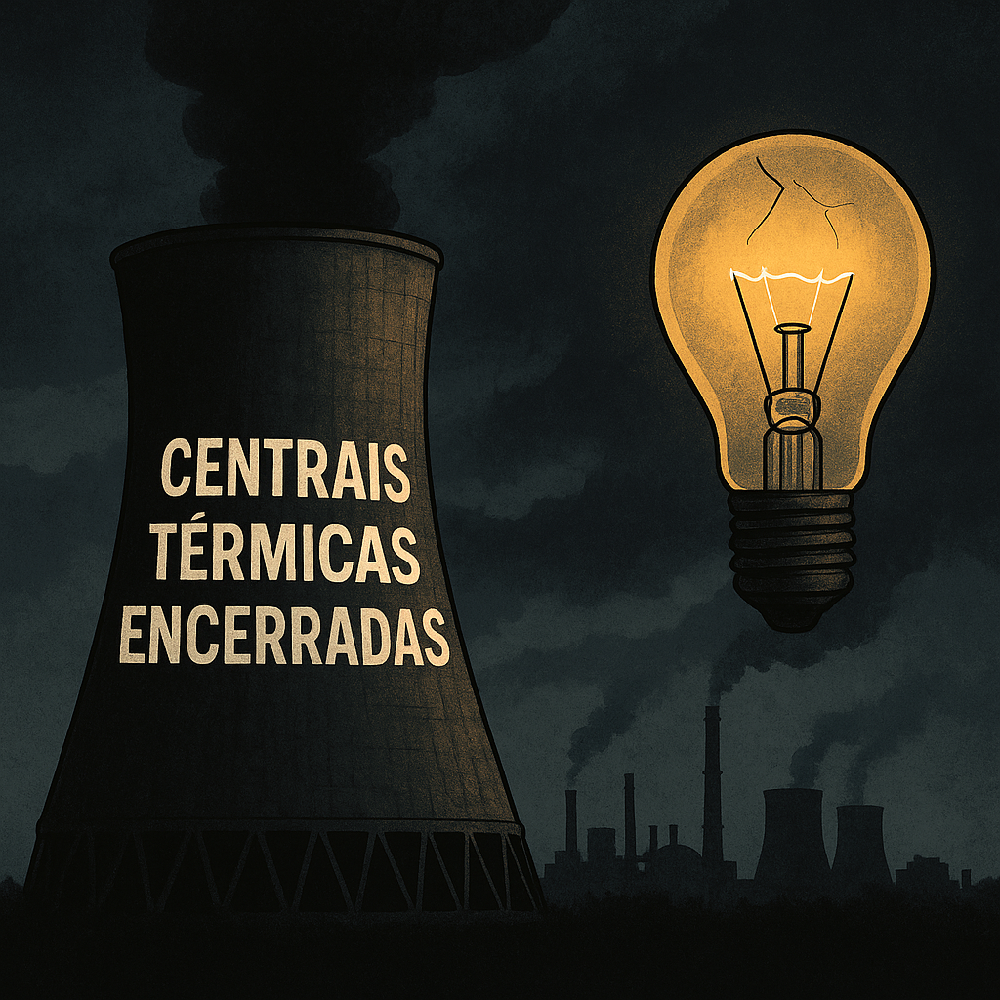

Publicado em 2025-04-29 21:11:17
Em plena crise energética europeia, provocada pela guerra na Ucrânia e pela instabilidade dos mercados globais, Portugal tomou uma decisão histórica — mas profundamente errada.
Enquanto países como Alemanha, França, Espanha e Polónia reativaram centrais a carvão e reforçaram as suas capacidades de produção interna para garantir segurança energética, Portugal decidiu encerrar as suas últimas centrais térmicas — Sines e Pego.
Sob o pretexto de um "ambientalismo exemplar", os governantes portugueses optaram por agradar a Bruxelas e à propaganda verde, sacrificando a soberania energética nacional.
Uma decisão simbólica, frágil e suicida.
Com o fecho das centrais térmicas:
Enquanto outros países se protegeram, Portugal ajoelhou-se à narrativa europeia, ignorando o cenário geopolítico real.
Não se trata de negar a necessidade da transição energética.
Mas uma transição séria exige planeamento, alternativas seguras e autonomia real.
O que Portugal fez foi desligar-se da tomada da soberania, confiando cegamente na boa vontade dos vizinhos e nos preços do mercado livre — como se o mundo fosse um lugar estável e justo.
Se houver nova crise — energética, política ou cibernética — Portugal será um dos primeiros a cair.
Sem margens de manobra, sem capacidade interna de resposta, ficaremos à mercê de importações caras e instáveis.
E a fatura recairá, como sempre, sobre o povo.
Na luz das velas, os mesmos políticos dirão que ninguém previu.
Mas tu e eu sabemos: isto foi previsto. Isto foi avisado. Isto foi permitido.
Portugal cometeu um erro histórico.
Fechou as suas centrais térmicas sem rede de segurança.
Fez-se escravo energético em nome de um ambientalismo sem autonomia.
E quando a próxima tempestade chegar, será tarde demais para ligar as máquinas de volta.
Francisco Gonçalves
(Fragmentos do Caos)
"Portugal desligou as suas últimas centrais térmicas não por estratégia, mas por vaidade política. Quando a próxima crise chegar, será tarde demais para acender a luz da responsabilidade."
— Francisco Gonçalves